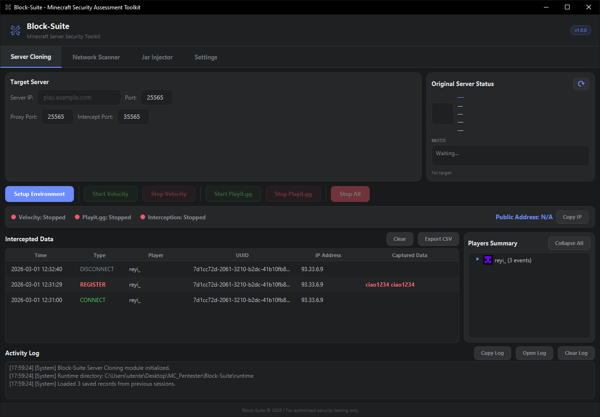
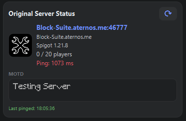
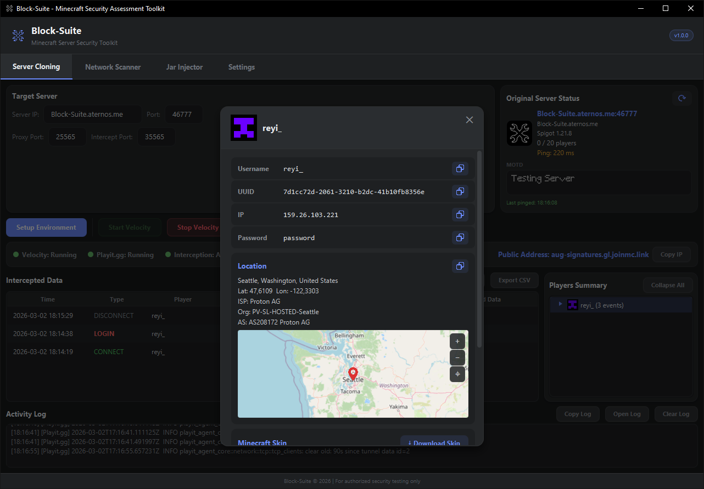

Server Cloning
The Server Cloning tab is the core of Block-Suite. It lets you set up a transparent proxy that mirrors any Minecraft server, intercepting all player data in real-time.
Tab Overview
The Server Cloning tab is divided into several sections, from top to bottom:
| Section | Purpose |
|---|---|
| Target Server Config | Enter the target server IP, port, and proxy ports |
| Original Server Status | Live status card showing the real server's info (favicon, version, MOTD, players, ping) |
| Control Buttons | Setup, Start/Stop Velocity, Start/Stop Playit.gg, Stop All |
| Status Bar | Service indicators (green/red dots) + public address with Copy button |
| Intercepted Data Table | Real-time table of all captured events |
| Players Summary | Tree view grouping data by player name |
| Activity Log | Detailed system log with copy/export/clear options |

Target Server Configuration
| Field | Default | Description |
|---|---|---|
| Server IP | (empty) | The hostname or IP of the target Minecraft server (e.g., play.example.com or 192.168.1.100) |
| Port | 25565 |
The target server's port |
| Proxy Port | 25565 |
The local port where Velocity listens. Players (or playit.gg) connect here |
| Intercept Port | 35565 |
Internal TCP port for plugin → GUI communication. No need to change unless it conflicts |
If you already have a Minecraft server running on port 25565, change Proxy Port to something else (e.g., 25566). The playit.gg tunnel will automatically route to whatever port you set.
Original Server Status
The status card on the right side shows real-time information about the target server:
- Favicon — The server's icon (64×64), decoded from base64
- Address — The resolved IP and port
- Domain — The hostname you entered
- Version — The Minecraft version (e.g., "Paper 1.20.4")
- Players — Online / Max count
- Ping — Color-coded latency: < 50ms 50–150ms > 150ms
- MOTD — Full Minecraft color-code rendering (§ codes + JSON components)
Click the refresh icon to re-ping the server at any time.

Control Buttons
Setup Environment
Downloads and configures everything needed:
- Downloads the latest Velocity proxy from PaperMC (first time only)
- Generates
velocity.tomlconfig pointing at your target — with all settings from Advanced Cloning - Installs the BlockSuite interceptor plugin
- Downloads ViaVersion + ViaBackwards if enabled in Settings
- Downloads the playit.gg agent (first time only)
- Auto-pings the target server to show its status
You can click Setup Environment again with a different target IP. Block-Suite will automatically stop any running services, reconfigure the proxy, and prepare the new target.
Start / Stop Velocity
Start Velocity launches the Velocity proxy and the interception server. The proxy binds to 0.0.0.0:<proxy-port> so players can connect.
Stop Velocity gracefully shuts down the proxy and interception server.
Start / Stop Playit.gg
Start Playit.gg creates a public tunnel. After a few seconds, the public address appears in the status bar.
The first time you start playit.gg, a claim URL appears in the Activity Log (e.g., https://playit.gg/claim/...). Open this URL in your browser to link the agent to your free playit.gg account. This only needs to be done once.
Stop All
Emergency button — stops Velocity, Playit.gg, and the interception server simultaneously.
Status Bar
The status bar shows the health of each service:
| Indicator | 🔴 Stopped | 🟢 Running |
|---|---|---|
| Velocity | Proxy not running | Proxy accepting connections |
| Playit.gg | No public tunnel | Tunnel active |
| Interception | Not capturing | Ready to receive data from plugin |
The Public Address label shows the playit.gg address. Click Copy IP to copy it to your clipboard.
Intercepted Data Table
Every event intercepted by the plugin appears here in real-time, newest on top:
| Column | Description |
|---|---|
| Time | Timestamp of the event (yyyy-MM-dd HH:mm:ss) |
| Type | Event type, color-coded (see below) |
| Player | Minecraft username |
| UUID | Player's UUID |
| IP Address | Player's real IP address |
| Captured Data | The intercepted data (password, skin hash, etc.) |
Event Types
| Type | Color | What It Means |
|---|---|---|
CONNECT | Green | Player joined the proxy |
DISCONNECT | Gray | Player left |
LOGIN | Red Bold | Player executed /login <password> |
REGISTER | Red Bold | Player executed /register <password> |
CHANGE_PASSWORD | Orange Bold | Player changed their password |
SKIN | Blue | Player's skin texture data captured |
Data Actions
- Clear Data — Removes all entries from the table (doesn't affect saved data until next save cycle)
- Export CSV — Exports all data to a timestamped CSV file in the
runtime/folder
The plugin captures these authentication commands: /login, /l, /register, /reg, /changepassword, /changepass, /cp, /unregister, /unreg. The password is extracted from the command arguments.
Players Summary Panel
The tree view on the right groups all intercepted data by player name:
▼ PlayerName (5 events)
UUID: 069a79f4-44e9-4726-a5be-fca90e38aaf5
IP: 192.168.1.50
[!] LOGIN: /login mypassword123
Connections: 3
Disconnections: 2- Each player node shows their Minecraft head icon (loaded from Minotar, cached locally)
- Credential lines are prefixed with
[!]for visibility - Collapse All button collapses every player node
Right-Click Context Menu
| Action | Description |
|---|---|
| Copy Value | Copies just the value (UUID text, IP address, credential, player name) |
| Copy Full Line | Copies the entire tree item text |
| More Info | Opens the Player Info Overlay |
Player More Info Overlay
A detailed modal overlay for any player, accessed via right-click → More Info.
Info Section
Rows with copy buttons for:
- Username — Minecraft name
- UUID — Mojang UUID
- IP — Player's IP address
- Password — Captured credential (if any)
Each row has a copy icon that swaps to a check mark for 1.2 seconds after copying.
Geolocation
Using the ip-api.com service, the overlay shows:
- City, Region, Country
- Latitude & Longitude
- ISP, Organization, AS Number
Interactive Map
An embedded OpenStreetMap viewer with:
- Draggable panning — click and drag to explore
- Zoom controls — + / − buttons, zoom range 3–16
- Recenter button — snaps back to the player's location
- Pin marker — red pin icon at the player's coordinates
Minecraft Skin
- Full body render (200px tall) from Minotar
- Download Skin button — opens a file chooser to save the original skin PNG

Activity Log
The log at the bottom records all system messages with timestamps ([HH:mm:ss]).
Log Actions
| Button | Action |
|---|---|
| Copy Log | Copies the entire log to clipboard |
| Open Log | Opens log in a separate, resizable window (800×500). Live-synced with the main log. |
| Clear Log | Clears all log entries |
The separate log window includes a Word Wrap toggle button and a line count indicator.
Toast Notifications
Slide-in notifications appear from the top-right corner for important events:
| Type | Icon | Usage |
|---|---|---|
| SUCCESS | ✓ (theme accent) | Setup complete, IP copied, data exported |
| ERROR | ⚠ (red) | Setup failed, connection errors |
| WARNING | ⚠ (orange) | Missing fields, invalid ports |
Toasts automatically dismiss after 3 seconds with a slide-out animation.
Data Persistence
All intercepted data is automatically saved to runtime/player_data.json whenever new events arrive. When you relaunch Block-Suite, your previous data is restored into the table and player tree.
Use Export CSV before clicking Clear Data if you want to keep a record. Clearing removes data from both the table and the saved JSON file.